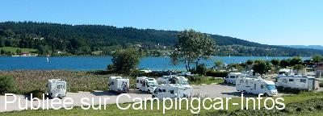
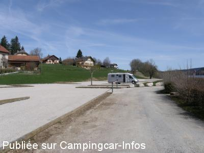
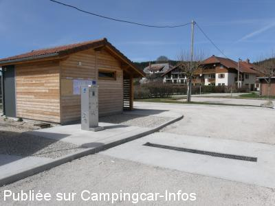
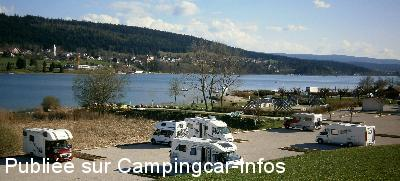
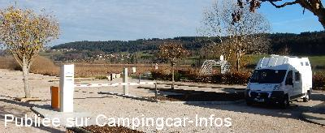
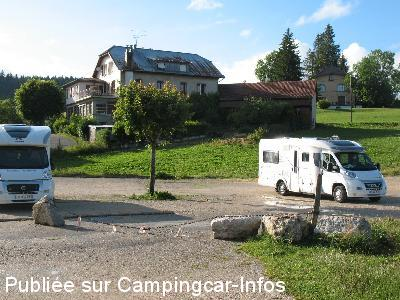

ASN = Aire de services avec stationnement nuit possible de :
SAINT POINT LAC
(N° 332)
Accès/adresse :
Rue du Lac
Plage du lac de Saint Point
25160 SAINT POINT LAC
Plage du lac de Saint Point
25160 SAINT POINT LAC
Latitude : (Nord) 46.81255° Décimaux ou 46° 48′ 45′′
Longitude : (Est) 6.3032° Décimaux ou 6° 18′ 11′′
Tarif : 2016
Stationnement : 9 €
Eau : 1 €
Paiement uniquement par carte bancaire
Type de borne : Autre
Services :


Commerces
Autres informations :
Ouvert à l'année
30 emplacements délimités au sol, permettant de disposer table et chaises à chaque véhicule.
6 emplacements prévus pour des véhicules de grande longueur + de 8 m.
Tel : +33(0)381 696 208

Le 16/03/2016 par François Hanrot

Le 15/05/2015 par isatis

Le 15/05/2015 par isatis

Le 28/04/2015 par François H.

Le 02/12/2014 par François H.

Le 09/08/2014 par André Bovy
de
François Hanrot
le 16/03/2016 :
§ L'aire municipale de camping-cars de Saint-Point Lac dans le Doubs dispose désormais d'un site internet dédié sous l'adresse www.airecampingcar-saintpointlac.fr. Y sont présentés l'aire elle-même ainsi que son environnement immédiat avec de nombreuses photos et des liens vers les sites touristiques majeurs de cette partie du Haut-Doubs.
Par ailleurs et afin de répondre à des critiques qui avaient été formulées par certains utilisateurs la saison passée, la municipalité a décidé de revoir à la baisse le tarif de la fourniture d'eau potable, qui passe de 3 à 1 € pour env. 100 l.
Les vidanges restent gratuites, et le droit de stationnement est toujours fixé à 9 € / 24 h (y compris la TVA et la taxe de séjour).
(Infos de mars 2016, communiquées par François Hanrot, webmaster du site)
§ L'aire municipale de camping-cars de Saint-Point Lac dans le Doubs dispose désormais d'un site internet dédié sous l'adresse www.airecampingcar-saintpointlac.fr. Y sont présentés l'aire elle-même ainsi que son environnement immédiat avec de nombreuses photos et des liens vers les sites touristiques majeurs de cette partie du Haut-Doubs.
Par ailleurs et afin de répondre à des critiques qui avaient été formulées par certains utilisateurs la saison passée, la municipalité a décidé de revoir à la baisse le tarif de la fourniture d'eau potable, qui passe de 3 à 1 € pour env. 100 l.
Les vidanges restent gratuites, et le droit de stationnement est toujours fixé à 9 € / 24 h (y compris la TVA et la taxe de séjour).
(Infos de mars 2016, communiquées par François Hanrot, webmaster du site)
de
migalec
le 27/09/2015 :
Nous sommes passés le 3/09/2015, la tranquillité était au rendez-vous. Le prix est justifié vu l'infrastructure.
Nous sommes passés le 3/09/2015, la tranquillité était au rendez-vous. Le prix est justifié vu l'infrastructure.
de
caphi
le 07/09/2015 :
Je ne suis pas d'accord avec les commentaires précédents, le prix de 9€ me parait raisonnable et l'aire est vraiment bien aménagée. Merci à la ville de st point lac
Je ne suis pas d'accord avec les commentaires précédents, le prix de 9€ me parait raisonnable et l'aire est vraiment bien aménagée. Merci à la ville de st point lac
de
jeff43
le 12/08/2015 :
9€, beaucoup trop cher pour du stationnement, 3.5€ pour avoir de l'eau alors qu'elle coule à flots partout dans le village.
Je ne recommande pas cette aire.
9€, beaucoup trop cher pour du stationnement, 3.5€ pour avoir de l'eau alors qu'elle coule à flots partout dans le village.
Je ne recommande pas cette aire.
de
Bouyer
le 02/07/2015 :
Nous sommes passés au mois de juin 2015,ce parking est bien équipé mais le prix est trop élevé , d'autant que les habitants de la localité ont accès par une entrée annexe à un barnum installe en fond de parking pour faire la fête ce qui provoque une circulation permanente de véhicules entraînant des perturbations jusqu'à une heure tres avancée de la nuit.La ferme jouxtant le parking génère parfois des odeurs peu agréables.
Beaucoup d'inconvénients pour un tarif trop élevé
Nous sommes passés au mois de juin 2015,ce parking est bien équipé mais le prix est trop élevé , d'autant que les habitants de la localité ont accès par une entrée annexe à un barnum installe en fond de parking pour faire la fête ce qui provoque une circulation permanente de véhicules entraînant des perturbations jusqu'à une heure tres avancée de la nuit.La ferme jouxtant le parking génère parfois des odeurs peu agréables.
Beaucoup d'inconvénients pour un tarif trop élevé
de
Alain 68
le 18/05/2015 :
Nous venons depuis des années, ravi de voir les améliorations apportées à l'air, beaux emplacements, amélioration de l'accès à la plateforme appréciée, revêtement de qualité.
Un mais toute fois, prix prohibitif 9€ pour le stationnement ! Nous fréquentons des aires de cette qualité pour un prix allant de 8€ services et électricité comprise (Charmes dans les Vosges) 8€5 services et électricité comprise ( St Jean de Monts, en bord de mer) je pourrais vous en citer d'autres. Aujourd'hui 18/05, installés depuis 12h00 nous sommes étonnés du peu de C.Cars stationnés, mais aussi très étonnés du nombre arrivant à la barrière et faisant demi tour! Alors réflexion, St Point ne sera plus notre destination favorite...
Nous prêt à payer, mais dans la limite du raisonnable.
A bon entendeur, meilleures salutations
Nous venons depuis des années, ravi de voir les améliorations apportées à l'air, beaux emplacements, amélioration de l'accès à la plateforme appréciée, revêtement de qualité.
Un mais toute fois, prix prohibitif 9€ pour le stationnement ! Nous fréquentons des aires de cette qualité pour un prix allant de 8€ services et électricité comprise (Charmes dans les Vosges) 8€5 services et électricité comprise ( St Jean de Monts, en bord de mer) je pourrais vous en citer d'autres. Aujourd'hui 18/05, installés depuis 12h00 nous sommes étonnés du peu de C.Cars stationnés, mais aussi très étonnés du nombre arrivant à la barrière et faisant demi tour! Alors réflexion, St Point ne sera plus notre destination favorite...
Nous prêt à payer, mais dans la limite du raisonnable.
A bon entendeur, meilleures salutations
de
André BOVY
le 09/08/2014 :
Aire agréable, dans un beau cadre, bord du lac. Sol en graviers, pas pratique quand il pleut.
Avec un camping-car de 7 m, nous n'avons pas eu le moindre problème pour entrer ni sortir. 6 €/nuit.
Nous sommes passés début juillet, encore plusieurs emplacements libres.
Aire agréable, dans un beau cadre, bord du lac. Sol en graviers, pas pratique quand il pleut.
Avec un camping-car de 7 m, nous n'avons pas eu le moindre problème pour entrer ni sortir. 6 €/nuit.
Nous sommes passés début juillet, encore plusieurs emplacements libres.
de
Wydler
le 03/10/2013 :
Stellplatz sehr schön nach dem Umbau. Leider kann man mit grösseren Womos > 7.5 Meter die Servicestation ohne Schaden am Fahrzeug nicht gebrauchen. Einfahrt zu eng, grosse Steine im Weg.
Stellplatz sehr schön nach dem Umbau. Leider kann man mit grösseren Womos > 7.5 Meter die Servicestation ohne Schaden am Fahrzeug nicht gebrauchen. Einfahrt zu eng, grosse Steine im Weg.
de
Bron
le 23/08/2013 :
Accès entré et sortie très très difficile pour un long véhicule et les services sont impossibles d'accès. Ceci même pour un camping-car traditionnel de ,oins de 8m pour un peu qu'une voiture soit mal parquée le long de la haie en aval!
Sinon site sympa, calme, agréable, propre... Bonne initiative le cabanon WC/douche
Accès entré et sortie très très difficile pour un long véhicule et les services sont impossibles d'accès. Ceci même pour un camping-car traditionnel de ,oins de 8m pour un peu qu'une voiture soit mal parquée le long de la haie en aval!
Sinon site sympa, calme, agréable, propre... Bonne initiative le cabanon WC/douche
de
rn
le 22/08/2013 :
aire trés calme le seul probleme c'est pour sortir car certaines personnes mettent un certain temps à comprendre le fonctionnement de la borne pour entrer
aire trés calme le seul probleme c'est pour sortir car certaines personnes mettent un certain temps à comprendre le fonctionnement de la borne pour entrer
de
MARANO78
le 06/05/2013 :
De passage début mai, à priori les travaux se termine.
Aire sympa, en bord de lac.
Contrairement à mon confrère, j'ai apprécié l'absence de tracage au sol, qui donne toujours un sentiment de parquage.
De passage début mai, à priori les travaux se termine.
Aire sympa, en bord de lac.
Contrairement à mon confrère, j'ai apprécié l'absence de tracage au sol, qui donne toujours un sentiment de parquage.
de
jcf68500
le 27/04/2013 :
§
De passage le 25 Avril 2013, l'aire est en pleins travaux, nous sommes allés au camping.
Le soir en nous promenant, nous sommes tombés sur le maire et 3 adjoints qui nous ont demandé notre avis sur les installations à venir : aire de service bien équipée, mais dont l'accès parait compliqué, un chalet avec 2 WC, une barrière auto pour l'entrée et la sortie, avec un système de paiement CB qui parait compliqué, par contre, rien pour le sol du parking, pas de nivellement et pas de traçage au sol. Quand au tarif de 7.50€, c'est OK, pour 2013, mais après..?? Je leur ai dit que les tarifs étaient trop excessifs, d'où, haussements d'épaules. A suivre...!!
§
De passage le 25 Avril 2013, l'aire est en pleins travaux, nous sommes allés au camping.
Le soir en nous promenant, nous sommes tombés sur le maire et 3 adjoints qui nous ont demandé notre avis sur les installations à venir : aire de service bien équipée, mais dont l'accès parait compliqué, un chalet avec 2 WC, une barrière auto pour l'entrée et la sortie, avec un système de paiement CB qui parait compliqué, par contre, rien pour le sol du parking, pas de nivellement et pas de traçage au sol. Quand au tarif de 7.50€, c'est OK, pour 2013, mais après..?? Je leur ai dit que les tarifs étaient trop excessifs, d'où, haussements d'épaules. A suivre...!!
de
lucas maryline
le 19/09/2012 :
nous y avons séjourné fin août, nuit très calme mais je confirme les remarques ci-dessous faites par jcf68500.
Si je repasse par là j'irai au camping qui est à peine plus cher.
nous y avons séjourné fin août, nuit très calme mais je confirme les remarques ci-dessous faites par jcf68500.
Si je repasse par là j'irai au camping qui est à peine plus cher.
de
jcf68500
le 16/07/2012 :
Séjour du 06/07 au 08/07/12
-Endroit magnifique et village sympa
-Parking sur gravier, à peu près plat, stationnement à 7.50€, bien trop cher, malgré sa situation agréable,
mais encombré en journée par de nombreuses voitures.
-Aire de services gratuit, d'accès compliqué, borne déglinguée et mal entretenue, les robinets EP et rinçage K7 trop proche d'où confusion, bonjour l'hygiène, un robinet sur le coté du bâtiment pour l'EP, mais là aussi, nécessite des manœuvres.
Séjour du 06/07 au 08/07/12
-Endroit magnifique et village sympa
-Parking sur gravier, à peu près plat, stationnement à 7.50€, bien trop cher, malgré sa situation agréable,
mais encombré en journée par de nombreuses voitures.
-Aire de services gratuit, d'accès compliqué, borne déglinguée et mal entretenue, les robinets EP et rinçage K7 trop proche d'où confusion, bonjour l'hygiène, un robinet sur le coté du bâtiment pour l'EP, mais là aussi, nécessite des manœuvres.